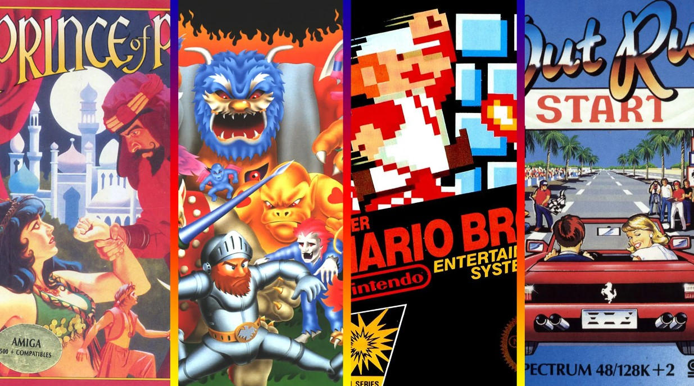
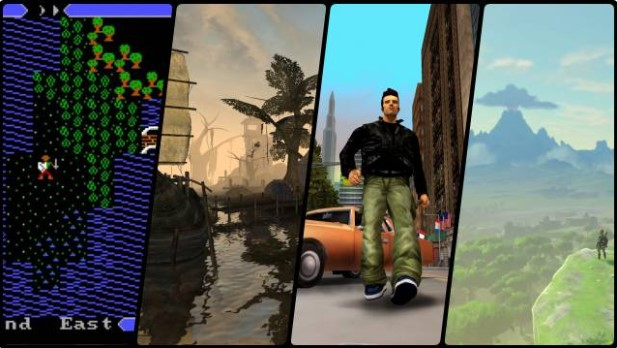
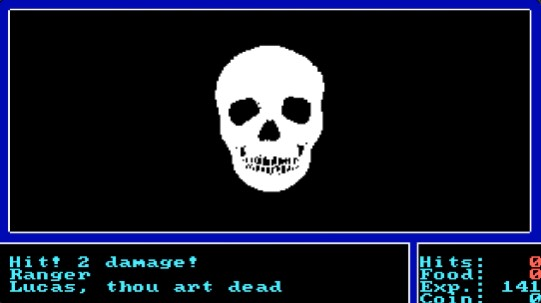
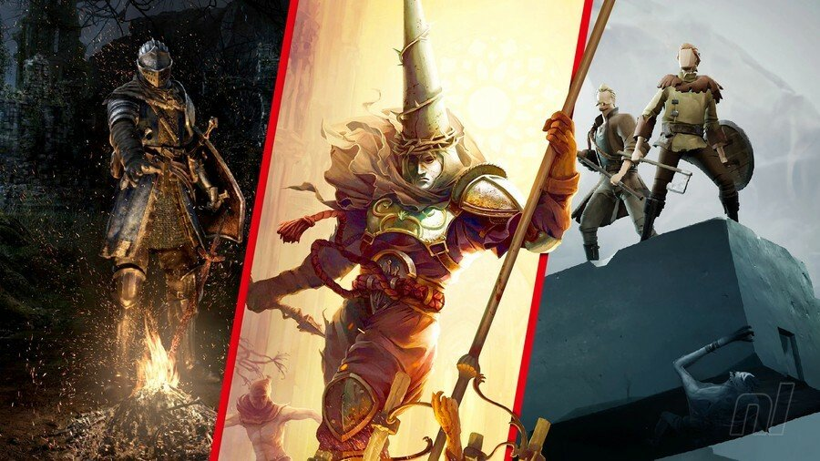
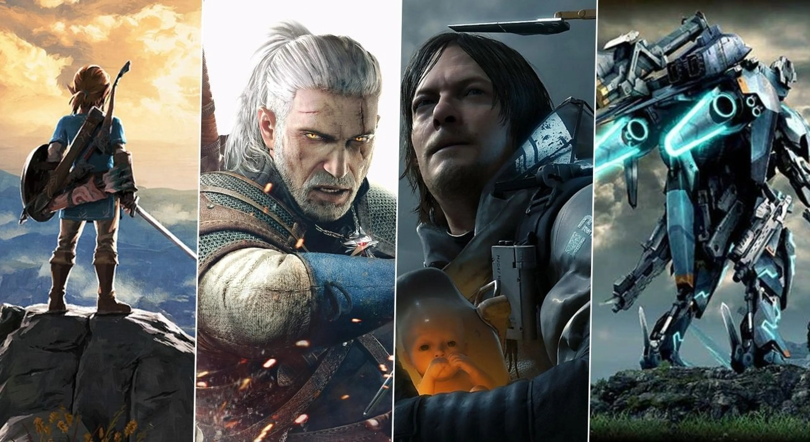
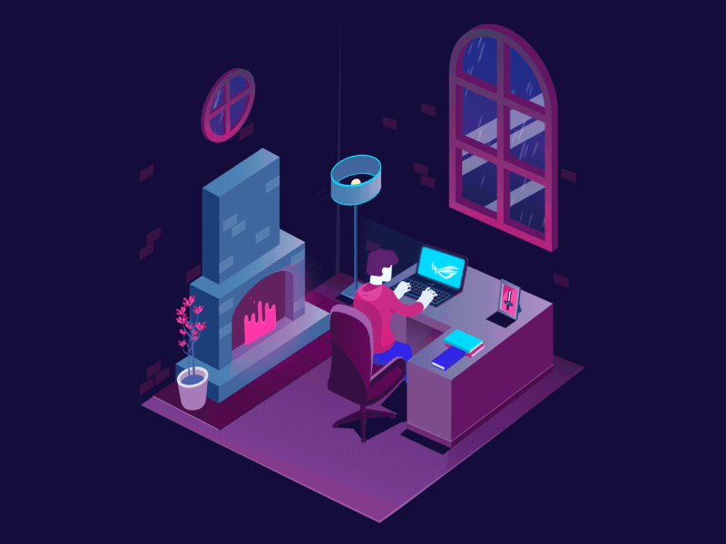

Intro

La evolucion de los videojuegos.
Esta pagina es un proyecto dedicado para poder informar de algunas de las entregas basadas en las mismas categoria, así ayudar a los interesados en saber el contenido de las categorías y las historias o desarrollo narrativo de las mismas en el contenido directo de la página..
El contenido de esta página es mereamente informativa y contextual para los amantes de los videojuegos y los interesados en su evolución a lo largo de las epocas. Este proyecto final esta conceptualizado en la evolucion de lo retro a las nuevas generaciónes e incluso en la vanguardia del genero de los videojuegos de mundo abierto.
CONTENT

La historia de los videojuegos de mundo abierto es de esos datos de información que llevan perdidos entre los demás esperando que algun día alguien pueda obtener dicha información para compartirla con el mundo. Los juegos de mundo abierto tienen como principal proposito es aquel que ofrece al jugador la posibilidad de moverse libremente por un mundo virtual y alterar cualquier elemento a su voluntad.
El término, a menudo, se usa alternativamente a otros como sandbox y free-roaming sin embargo, los términos mundo abierto y free-roaming describen el ambiente del juego en sí y alude más a la carencia de cualquier tipo de barrera artificial, en oposición a las paredes invisibles y la aparición de otras pantallas que suelen ser comunes en los videojuegos lineales

El primer videojuego de mundo abierto es de la decada de los 80's mientras que los gamers piensan que es un genero que nació o sale por parte de entregas como GTA SA o TLOZ OOT. Las mecánicas de mundo abierto se extendieron como la pólvora (es imposible señalar todos los ejemplos que imitaron la fórmula GTA) y se han ido refinando con el paso del tiempo. A día de hoy, quizá los mejores exponentes de esta evolución sean The Legend of Zelda Breath of the Wild y Red Dead Redemption II. Sin embargo, el género necesita una revolución. ¿Llegará con alguno de los juegos anunciados en 2022? En cuestión de semanas podremos comprobar cómo se ha adaptado el estilo "sandbox" a sagas legendarias. Leyendas Pokémon Arceus, que se lanza el 28 de enero, tratará de revolucionar la fórmula de atrapar, evolucionar y competir con estas criaturas en un un mundo abierto. En este caso se trata de la región de Hisui (una versión antigua de Sinnoh que toma elementos de Japón durante la restauración Meiji).
Elden Ring, por su parte, recupera los elementos de los "souls" y de Sekiro Shadows Die Twice, con un entorno que se presta más a la exploración libre. El título de FromSoftware, que ganó el premio a juego más esperado de 2022 en The Game Awards, es una evolución de una de las fórmulas más influyentes de la pasada generación.

A estos dos juegos hay que añadir Dying Light 2, que se lanza el 2 de febrero. En este caso, su apuesta por un mundo abierto plagado de infectados, se caracteriza por las opciones de navegación (con movimientos de parkour), el combate cuerpo a cuerpo y las decisiones que cambian tanto la historia como el entorno.
El título de FromSoftware, que ganó el premio a juego más esperado de 2022 en The Game Awards, es una evolución de una de las fórmulas más influyentes de la pasada generación.

A estos dos juegos hay que añadir Dying Light 2, que se lanza el 2 de febrero. En este caso, su apuesta por un mundo abierto plagado de infectados, se caracteriza por las opciones de navegación (con movimientos de parkour), el combate cuerpo a cuerpo y las decisiones que cambian tanto la historia como el entorno. Y claro, no podemos descartar que finalmente llegue la secuela de Zelda Breath of The Wild a lo largo del año, y vuelva a marcar un camino a seguir dentro del género. Desde luego se presentan unos meses apasionantes para cualquier aficionado al "sandbox".
About

Nosotros somos un grupo de... JAJA! claro que no, Soy Luis, mejor conocido como "Apsalon" o "Apsa" un dibujante y diseñador digital dedicado a las comisiones de arte digital. Soy de Cd. Juarez, Chih. y esto es un proyecto para la universidad. He intentado avanzar en el campo de dibujo y en el campo de diseño, en estos momentos solo hago este sitio para publicar y de cierta forma "publicitar" o bien dar a conocer mi arte. Gracias a las personas que dan apoyo a este tipo de proyectos y sin nada mas que decir, nos vemos gracias por visitar la galeria y los post que hago, un saludo crack...
Contact
Elements
Actions